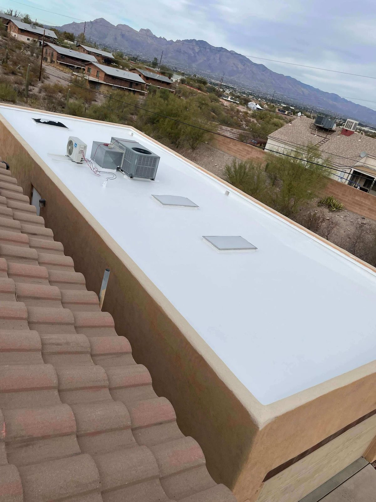

Roof Coating · Tucson, AZ
Roof Coating in Tucson — Elastomeric & Silicone Systems
A good roof coating seals up minor leaks, bounces the desert sun off, and adds years to a flat roof for a fraction of what replacing it costs. We put down elastomeric and silicone systems made for Arizona.
- Elastomeric & silicone
- Seals leaks & seams
- Cuts cooling costs
- Extends roof life
Restore, Don't Replace
Buy your roof more years for less money
If your flat roof is still solid underneath but looking tired, chalky, faded, a couple little leaks, a reflective coating can bring it back without the cost and mess of tearing it off and starting over.
The coating goes on as a seamless, reflective skin that seals up seams and small penetrations, throws the sun's heat back to cut your cooling bill, and keeps UV off the roof underneath. Pound for pound it's one of the smartest moves in desert roofing.
- Seamless reflective membrane
- Seals seams & minor leaks
- Lowers roof surface temperature
- Far cheaper than replacement
Elastomeric Coatings
Flexible acrylic membranes that expand and contract with the roof.
Silicone Coatings
Excellent for ponding water and long-term UV resistance.
Cool-Roof Reflectivity
Bright reflective finishes that bounce heat and reduce cooling load.
Coating Types
Elastomeric vs. silicone — which is right?
Both of them bring a roof back, they just shine in different spots. Elastomeric (acrylic) is flexible and easy on the budget, and it's great where water drains off fine. Silicone handles standing water and hard UV better than just about anything and stays flexible for years.
Once we get up and look at your roof, we'll tell you which one fits its shape, how it drains, and your budget, and give you a clear price.
- Elastomeric for flexibility & value
- Silicone for ponding & UV
- Proper prep for lasting adhesion
- Honest repair-first guidance
Before & After
What a Tucson roof coating actually looks like
A Midtown flat roof came to us chalky, stained and leaking at the seams after years under our sun. The structure was fine, so instead of a tear-off we cleaned it, fixed the seams and penetrations, and rolled on a white elastomeric system. Same roof, ten to fifteen more years, and the house runs cooler.
We do the same thing on commercial flat roofs around Tucson, warehouses and retail plazas included, where a restoration coat keeps the doors open while the work happens.
- Residential flat & foam roofs
- Commercial roof coating & restoration
- Recoats on older coating systems
- Metal roof coatings
See the before & after photos from that Tucson flat roof Why primer makes or breaks a coating job
Cost
What roof coating costs in Tucson
Coating is priced by the square foot, and three things move the number: which coating you choose, how much prep and seam repair the roof needs first, and the size of the roof. A straight recoat on a sound roof sits at the low end; a full restoration with repairs runs higher. Either way it comes in well under a replacement.
We wrote up the planning numbers we see around town so you can budget before we ever come out. The exact, line-item price comes after a free inspection, with no commission reps and no closers.
Roof coating cost in Tucson: the 2026 guide Flat roof repair & replacement, when a coating isn't enough
Related Guides
More roof coating guides
Still weighing a coating? These answer the questions we get asked most: how long it lasts, when to recoat, and how to pick who sprays it.
Flat roof coating in Tucson: what homeowners need to know How long a flat roof coating lasts in Tucson How to hire a Tucson roof coating specialist
How It Works
Our Roofing Process
Inspection
We confirm the roof is a good coating candidate and pick the right system.
Prep & Repair
Clean the surface, repair seams and penetrations so the coating bonds and lasts.
Coating Application
Reflective elastomeric or silicone coating applied to spec thickness.
Final Check
Quality inspection and a workmanship warranty on the finished coating.
From a real inspection
Why this second-storey walk deck is leaking
Missing stucco flashing, tile used where it should not be, and no cricket to move water toward the drain.
FAQ
Roofing Questions, Answered
Still wondering about something? Call us at 520-753-1758 — straight answers, no pressure.
Ask Us DirectlyHow much does a roof coating cost in Tucson?
Depends on the size, the shape it's in, and which coating you go with, but it usually runs a fraction of a full replacement and buys you years of extra life. The estimate's free and itemized.
What's the difference between elastomeric and silicone roof coatings?
Elastomeric (acrylic) is flexible and cheaper, best where the water actually drains off. Silicone's the one for ponding water and brutal UV. We'll tell you which fits after we look the roof over.
Will a coating fix my roof leak?
On a roof that's still solid, a coating'll seal up seams, small penetrations and minor leaks. If it's got bigger problems than that, we'll be straight with you and point you toward a repair or replacement instead.
Do roof coatings really lower cooling bills?
Yeah, they do. A reflective 'cool roof' coating bounces the sun off instead of soaking it in, so the roof runs cooler and your AC doesn't have to work as hard out here.
How long does roof coating last in Arizona?
A good elastomeric or silicone system usually gives you somewhere around 10 to 15 years before it wants a recoat, depending on the product and how much sun that roof takes. Recoating is a lot cheaper than tearing off, which is the whole point of staying on top of it.
What kind of roofs can be coated?
Flat and low-slope roofs mostly, built-up, modified bitumen, even metal, all take a coating well. We'll confirm yours on a free inspection.
Do you do commercial roof coatings in Tucson?
We do. Warehouses, retail plazas, office buildings, anything with a flat or low-slope roof that's still structurally sound. A restoration coat means no tear-off, so your tenants and customers keep going about their day while we work.
What is the best roof coating for Tucson?
For most flat roofs here it's silicone, because it shrugs off ponding water after a monsoon and holds up to our UV. If the roof drains well and budget matters, a good elastomeric acrylic does the job. We'll tell you which one your roof actually wants after we walk it.
Renew your roof for less
A reflective coating might buy your roof years. Get a free inspection and an honest recommendation.
Let's Talk
Let's Take a Look at Your Roof
Tell me what's going on up there — a leak, storm damage, an old roof that's seen better days, or a full replacement — and we'll get you on the books for a free inspection.